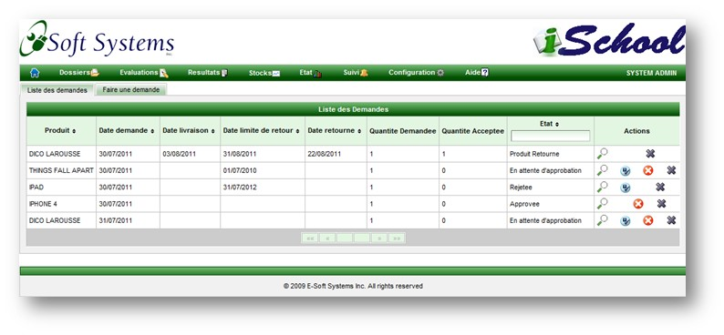
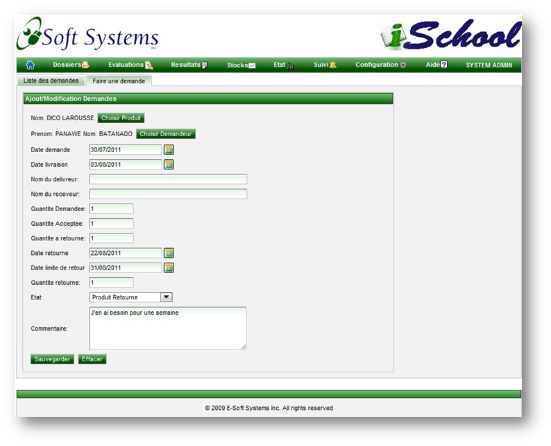
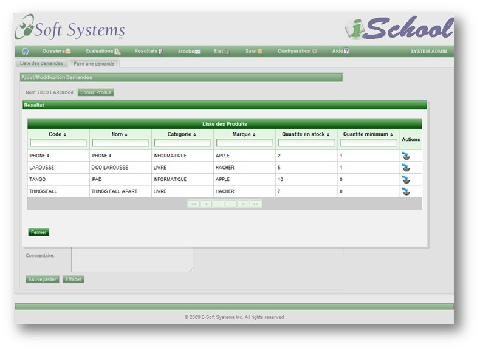
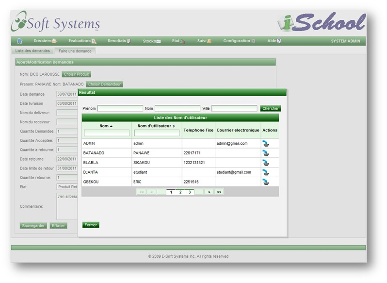

La page de demande permet d'effectuer les reservations de produits (example: les livres), d'approver, de rejeter ou de supprimer les reservations soumises.
Les boutons sont affiches en fonction de l'etat de la reservation:
Liste des demandes

Ajout/Modification des demandes
Cette page permet d'enregistrer une demande au nom d'une etudiant ou d'un professeur. Elle permet aussi de modifier les demandes
soumises par les etudiants et les professeurs eux-memes.

Choix du produit
En cliquant sur le bouton "Choisir Produit" cette page apparait permettant de selectionner le produit.

Choix du demandeur
En cliquant sur le bouton "Choisir Demandeur" cette page apparait permettant de selectionner la personne effectuant la reservation.

Copyright © 2011, E-Soft Systems Inc